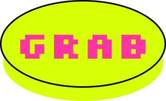
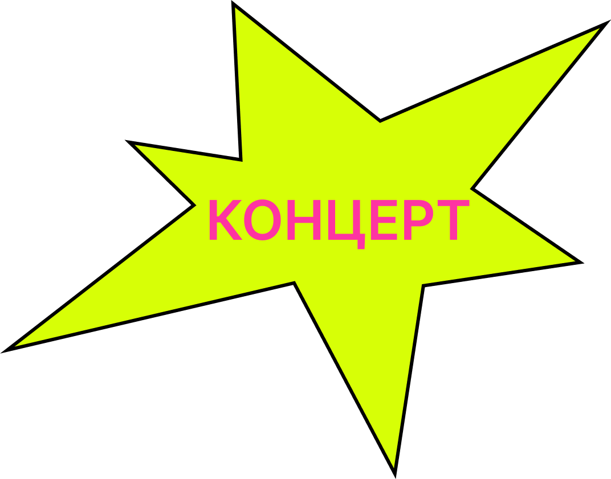

Главные звезды сцены сегодня - это цифровые фантомы.
«Воскрешение» Элвиса Пресли и Уитни Хьюстон собрало
миллиарды просмотров и долларов. Зрители платят
за то, чтобы увидеть кумиров, которых уже нет в живых.
«Воскрешение» Элвиса Пресли и Уитни Хьюстон собрало
миллиарды просмотров и долларов. Зрители платят
за то, чтобы увидеть кумиров, которых уже нет в живых.
grabber
grabber

